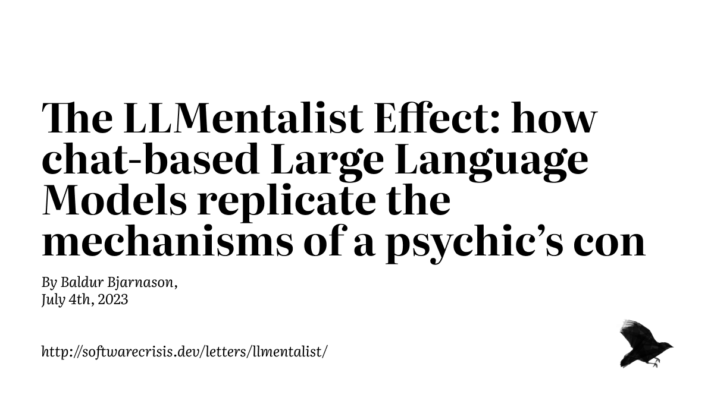
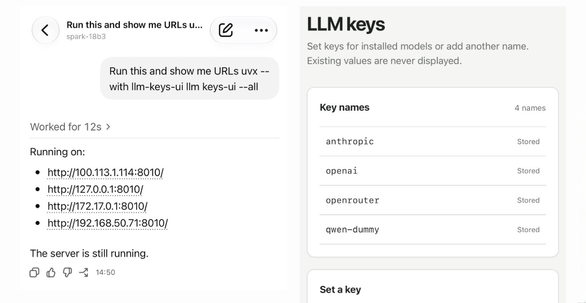
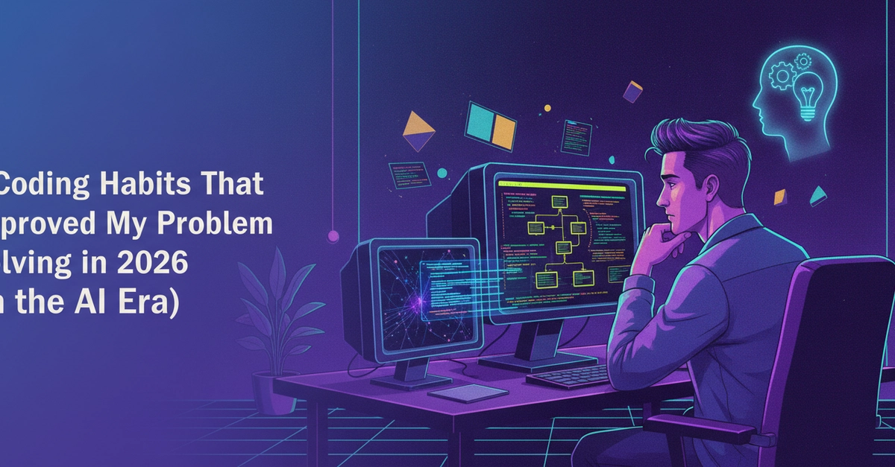
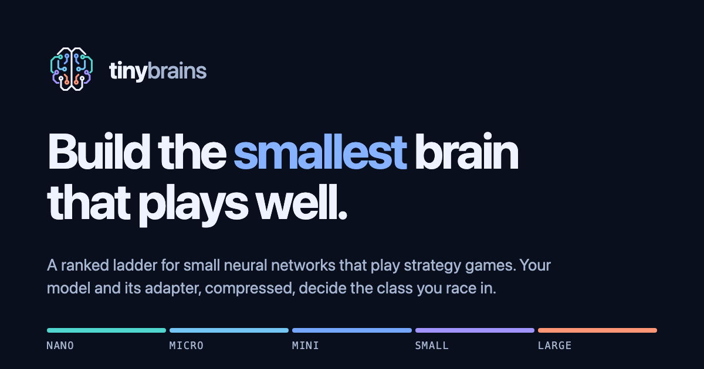

🔥 Top 3 (must read)
If AI coding is lowering your code quality, you're not managing quality right
(HN discussion, 73 points, 118 comments) The author argues that falling code quality is not caused by AI tools themselves. It is caused by teams that never had a real quality process, and AI just made the gap visible. Why it matters: as an EM adopting Claude Code and Copilot on your team, this is the frame you need. Review gates, tests, and ownership rules matter more, not less.
Quoting voxium
A developer describes joining a big company where specs, code, tests, PRDs and tickets are all generated by Claude Code, and nobody understands the system. Management says "pushing code is not a bottleneck", and pushes for more output. Why it matters: a clear warning story about AI adoption done top-down. Good material for a team talk about where AI helps and where human understanding must stay.
S
The LLMentalist Effect (2023)
(HN discussion, 161 points, 252 comments) This 2023 essay compares LLM chat output to a mentalist's cold-reading trick. Vague answers feel smart because the reader fills in the meaning. It came back to the HN front page with a big discussion. Why it matters: useful when you judge AI-generated specs or reviews. It reminds you to check for real content, not just confident tone.

🤖 AI for developers
llm-keys-ui 0.1
small plugin from Simon Willison to set API keys in a web form instead of pasting them into a terminal. Built because he runs coding agents on remote machines with Codex Remote and controls them from his phone.

5 Coding Habits That Improved My Problem Solving in 2026 (In the AI Era)
writing code and solving problems are different skills. Habits to keep the second one sharp when AI writes most of the first.

👔 Engineering & teams
If AI coding is lowering your code quality, you're not managing quality right
the quality-process argument above. Read the HN comments too, many are from team leads.
Quoting voxium
the "nobody knows anything here" story. A case study in what happens when output volume becomes the only metric.
S
🎯 For me
Nothing today on Node.js, React, Flutter, Playwright or Maestro. The EM angle is strong, though: the code-quality article and the voxium quote together are a good pair for a team discussion on how to adopt AI coding tools without losing ownership of the code.
💡 App ideas & indie builds
Radius – A Meetup.com Alternative
(HN discussion, 105 points, 45 comments) — a site to find and organize local in-person groups and events. Problem: Meetup.com is expensive for organizers and cluttered for members. Inspiration: an old, well-known product with unhappy users is a good target for a simpler, cheaper rebuild.
A competition for small neural networks that play strategy games
(HN discussion, 39 points, 11 comments) — a leaderboard where people submit tiny neural networks to play strategy games against each other. Problem: gives hobbyists a fun, bounded challenge with clear rules and rankings. Inspiration: a small competition site with a leaderboard is a cheap way to build a community around any skill.

🎓 Try this
Run a coding agent on a remote machine and drive it from your phone, the way Simon Willison does with Codex Remote. If you use his
llm CLI on that machine, add llm-keys-ui so you never paste API keys into a phone terminal.